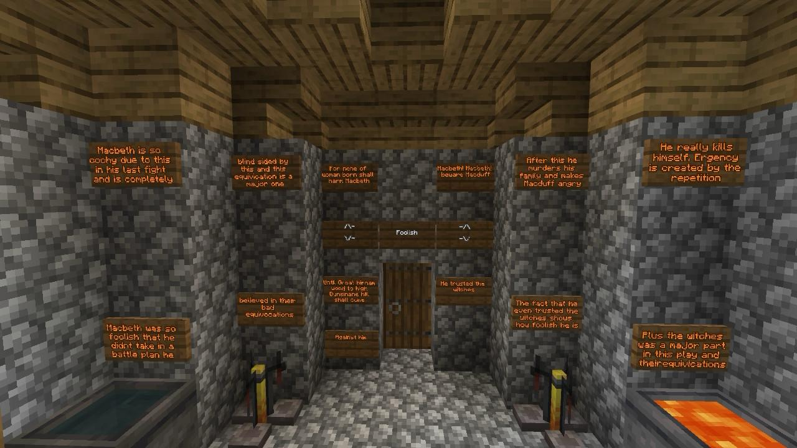

How themes are represented
Paranoia.jpg)
|
We represented the theme of paranoia in the dining room of the castle as this is where Macbeth saw the ghost of Banquo, whom he just had murdered. Although no one else sees the ghost, Macbeth speaks to it out loud, panics, and acts irrationally. |
Fierceness.jpg)
|
We represented the theme of fierceness in the battlefield seen at the start of the play as this is where Macbeth ruthlessly fought and was described as a "valiant cousin, worthy gentleman" for his brutal fighting in battle. |
Ambition.jpg)
|
We represented the theme of fierceness in the battlefield seen at the start of the play as the throne itself is the ultimate symbol of power, desire, and the lengths Macbeth will go to achieve it. The throne becomes the object of his obsession, driving him to murder Duncan, betray friends, and put Scotland into chaos. |
Foolishness |
We represented the theme of foolishness in the witches hut as it’s where Macbeth blindly trusts dark forces, misinterprets their words, and lets ambition cloud his judgment - all signs of tragic foolishness. The witches speak in riddles and half-truths, but Macbeth takes their word. Also, He believes their prophecies are guarantees, when they're not. This blind faith shows his foolishness and desperation - he mistakes mystery for truth. |
Macbeth as a strong king.jpg)
|
We represented the theme of Macbeth as a strong king in the castle’s rooftop defenses because the high, defensive space symbolizes power, control, and military strength which are the qualities Macbeth wants to project as king, especially later in the play. His position on the rooftop could also symbolize his high status and strength |
Traitorousness.jpg)
|
We represented the theme of Traitorousness in Duncan's room in Dunsinane castle because it is the exact place where the ultimate betrayal happens: Macbeth murders Duncan, his king and guest all while Duncan is sleeping under Macbeth’s protection. Duncan’s room becomes the physical space where Macbeth’s loyalty turns into treachery. |
Darkness.jpg)
|
We represented the theme of Darkness on the battlefield hill because Darkness in Macbeth often represents things like evil deeds, death, and the unknown. The battlefield, a place of bloodshed and death, is a powerful image of a world filled with conflict. |
Macbeth as a weak king.jpg)
|
We represented the theme of Macbeth as a weak king in the courtyard because this is the place where Macbeth and Lady Macbeth plot to kill King Duncan. It Also marks his descent into madness as it is where he initially hallucinates a dagger before the murder |